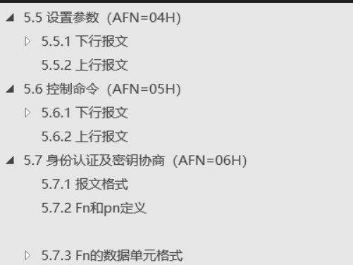
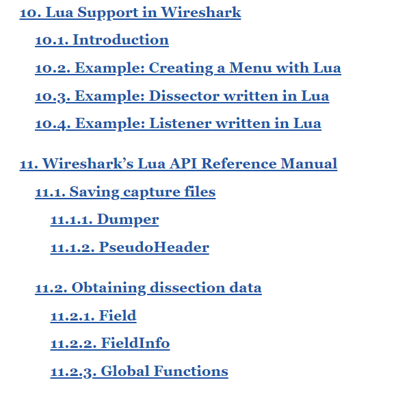
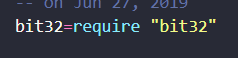
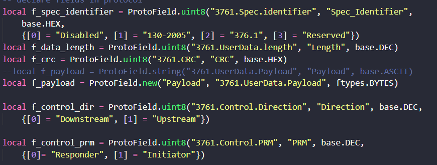
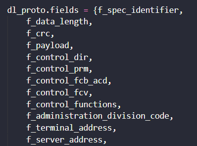
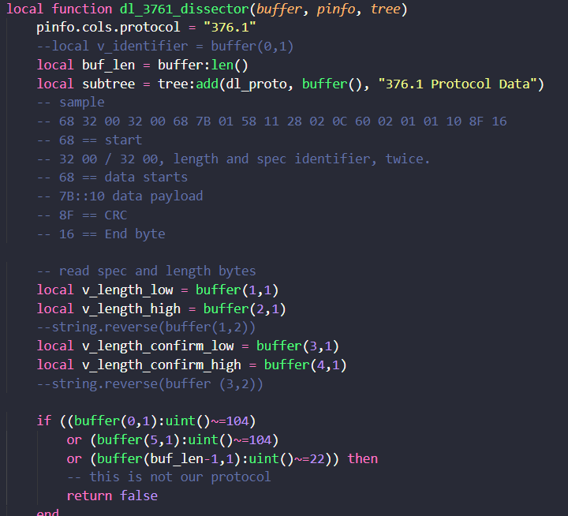
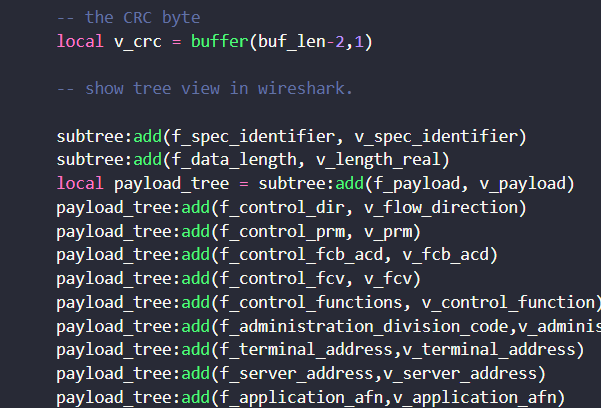
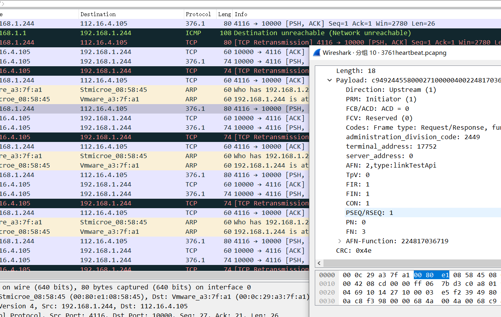

0x00 楔子
之前接到一个专网测试项目，其使用的是376.1协议进行通信，为了对其进行测试，这边选择对其进行协议分析，wireshark观察dump下来的数据包发现数据量并不多，所以打算写插件解析下。
0x01 协议介绍
376.1协议全称 国家电网公司企业标准(Q/GDW 376.1-2009):电力用户用电信息采集系统通信协议 目前最新的是2013版本。这边贴下2009版的协议规约。
0x02 帧格式
格式如下:
| 起始字符（68H） | ↑ | ||
|---|---|---|---|
| 长度L | 固定长度 | ||
| 长度L | 的报文头 | ||
| 起始字符（68H） | ↓ | ||
| 控制域C | 控制域 | 用户数据区 | |
| 地址域A | 地址域 | 用户数据区 | |
| 链路用户数据 | 链路用户数据 （应用层） | 用户数据区 | |
| 校验和CS | 帧校验和 | ||
| 结束字符（16H） |
具体字段字节大小等详细信息规约中都存在，这边就不说了。
0x03 功能码
链路用户数据中包含一个功能码AFN，表示当前终端与采集器之间是通过哪个功能进行通信的，不同的功能拥有不同的字段，所有通信信息都会保存在链路用户数据中。大致看了下规约，16个AFN，分上下行，每个AFN中还有很多FN来指定的小功能，类似电力传输计算、终端通断电时间等等，实现起来还是很烦的。

0x04 wireshark文档
由于wireshark官方收录的协议通常都是运用较为广泛的，对于那些仅国内用或者比较小众的没有wireshark支持的话一般都是无法直接解析的，分析数据包也只是显示tcp，而并不对其字段进行解析，打开看的话直接显示payload后面跟一长串字节码。面对这种情况，wireshark对开发者提供了api文档，用户可以利用这些api自己写插件进行协议解析。目前wireshark支持两种语法的插件格式，一种是c，一种是lua；这边我选择了用lua去开发，毕竟相对静态语言，lua这种脚本语言开发效率肯定是更高的，wireshark内置了lua解释器，直接解析就行了。
wireshark官方对开发者文档定义的还是很完整的，字段类型、数据运算在其中都有详细介绍。
贴下开发者文档，10-11章讲协议解析，可以重点关注。

0x05 插件编写
协议中通常碰到一种情况，一个字节中按比特拆分成好几个字段，所以这边需要bit库通过位操作对数据进行解析。

之后新建字段，字段类型需要根据规约给的信息进行精确分配

新建完字段后对字段进行注册绑定

接下来是每个字段的函数实现

最后对实现完成的字段进行树节点的可视化处理，需要对应好节点上下层之间的关系

这边是效果:

由于字段用英文加注释的话可能很让人疑惑，而加中文坑又很多，所以这边解析出来后仍然需要根据afn和fn等内容去查找字段的含义，来让用户知道解析出来的字段代表的内容。
0x06 总结
由于内容涉及公司业务，所以未将代码托管到github；代码未进行结构化处理，后期打算进行代码格式化；总的来说其实实现就是调API，之后就是位操作解析数据，还是很简单的。这次项目了解到了wireshark插件实现，以及lua的代码编写，用惯了python还是感觉lua用着不顺手，233333333，加油加油。